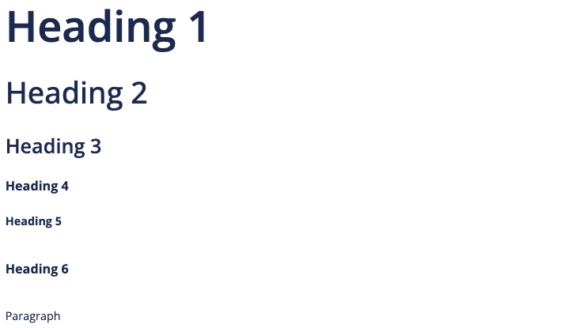

Style Guides
This page provides detailed guidance on the written style used across our chapter’s website. The purpose is to ensure consistency in tone, terminology and formatting, while promoting inclusive and accessible content throughout.
Writing
These guiding principles aim to ensure written content remains clear, accessible, and user-focused:
- Write for scanning: Online readers tend to scan rather than read every word. On average, they read about only 20% of the text on a page.
- User-oriented: Write content that helps visitors to quickly and easily complete the specific tasks they come for.
- Use plain language: Keep language simple and direct to make information easy to understand and accessible to all users.
- Guide the reader: Use clear headings, signposts, and answer unasked questions to make content more engaging and relevant.
- Highlight key information: Place important messages at the top of the page to capture visitor’s attention.
- Use credible sources: Provide accurate information and support with authoritative references to to back up the content and build trust.
The LinkedIn Learning course below is a helpful resource:
A to Z
Please follow the specific guidance below to ensure all content on our chapter’s website maintains a consistent style.1
Abbreviations and acronyms
Academics
Addressing the user
Ages
Do not use hyphens in ages unless to avoid confusion, although it’s always best to write in a way that avoids ambiguity. For example, ‘a class of 15 16-year-old students took the A level course’ can be written as ‘15 students aged 16 took the A level course’.
Alt text
Ampersand (&)
Do not use ampersands except in established abbreviations (e.g. R&D, B&B) or in organisation where the ampersand is part of the official name (e.g. British & Irish Chapter).
BA (not B.A.)
Bullet points and steps
Capitalisation
Captions
Contractions
Course/programme/degree
data
Treat as a singular noun: The data is stored on a secure server.
data set
Dashes
Dates
early career researcher (ECR)
Email is not hyphenated.
eg, etc and ie
Faculties
FAQs (frequently asked questions)
Do not use FAQs.
Gender
Use gender-neutral language wherever possible, e.g. you, them their, they.
Great Britain
Refers only to England, Scotland and Wales. Northern Ireland is not included. State explicitely if referring to multiple areas, e.g. “England, Scotland and Wales”.
hospital
Only capitalise the initial H when referring to a specific, named hospital.
Hyphens
ie
See eg, etc and ie.
Italics
Initials in a name
No space between initials for names. For examples, AW Smith, KP Jones.
Jargon
Avoid jargon. Follow guidance on using plain English.
keywords
keywords
Links
Lists
MA (not M.A.)
Major, Minor
Master’s, master’s
MEng
MPhil
MPhys
MSci (Not M Sci)
Measurements
metadata
multidisciplinary
Numbers
Organisations
Open Day/open day
Percentages
PhD
postdoctoral
postgraduate
Program/programme
Pronouns
Use gender-neutral language wherever possible. Disclosure of pronouns is optional; if a person has shared their pronouns, use consistently in all communications.
Qualifications
Spelling
Space after a full stop
Steps
Telephone numbers
Times
Trust
University
Underlining
avoid underlining text for emphasis, and use bold instead. This is important in digital copy as readers often think underlining signifies a hyperlink.
URLs
Website addresses
yesterday
YouTube
Branding
Chapter Logo

- The Chapter logo is designed by the ISMRM Global Marketing and Communications team.
- The Chapter logo is the official visual identity of the Chapter and should be used to represent the Chapter in all formal contexts.
Newsletter Logo

- The Newsletter logo is derived from the Chapter logo (appeared in the bottom-right corner of the Newsletter logo).
- The Newsletter logo must be used as the official identifier for all Chapter newsletter communications.
- When both the Chapter logo and the Newsletter logo could be displayed together, the Newsletter logo takes precedence, and the Chapter logo should be omitted to avoid visual duplication.
Typography
Lato is the official typeface for the chapter and should be used for all site elements, including page titles, headings, navigation, and body content.

Templates
Please find below a collection of marketing templates, orignally developed by the ISMRM central office, to help ensure that all Chapter presentations, flyers, and social media posts maintain a consistent style and visual identity.
Presentation
Flyer
Accessibility
This section aims to provide guidance to ensure the Chapter website remains inclusive and easy to read for all users.
Color and Contrast
- The designated primary font color for all headings is
#192f5c, providing a high contrast ratio against white backgrounds that ensures the text remains readable across various devices and lighting conditions.
Footnotes
This style guide for the Chapter’s website builds on best practices and guidance from the University of Southampton Digital UX Team and Editorial Team and the University Hospital Southampton Communications Team.↩︎
Social Media